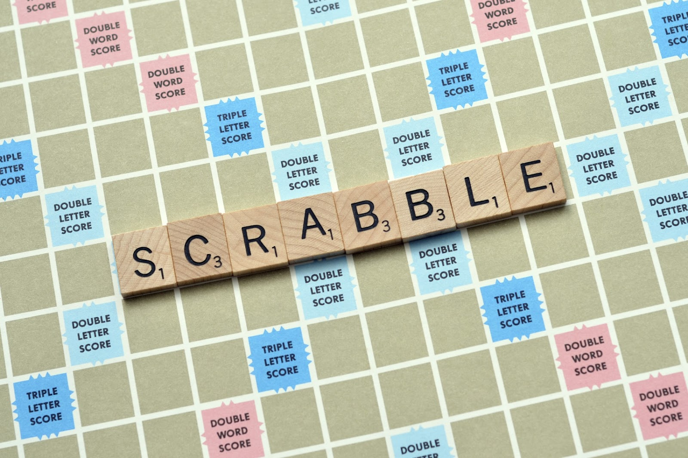
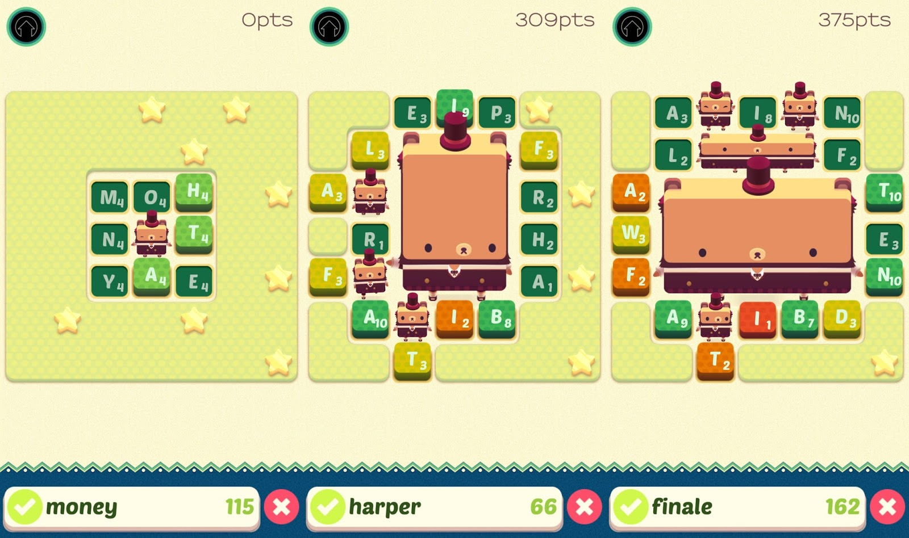
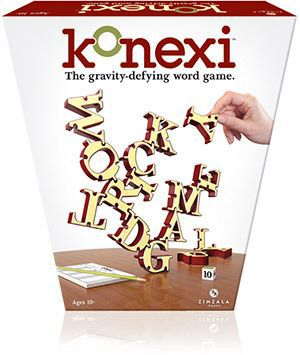
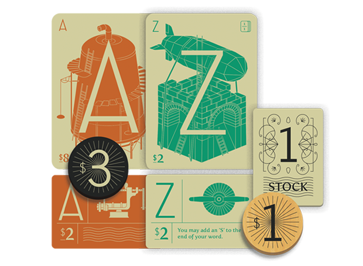
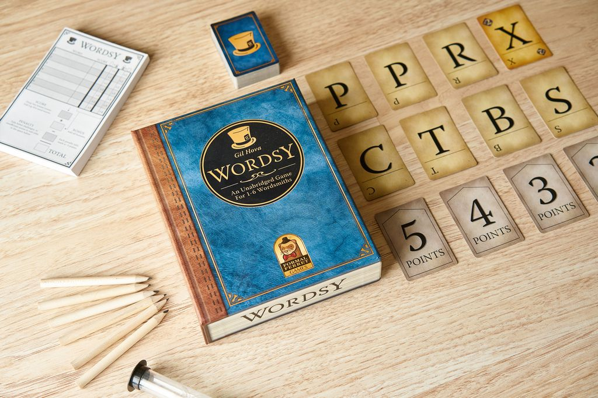
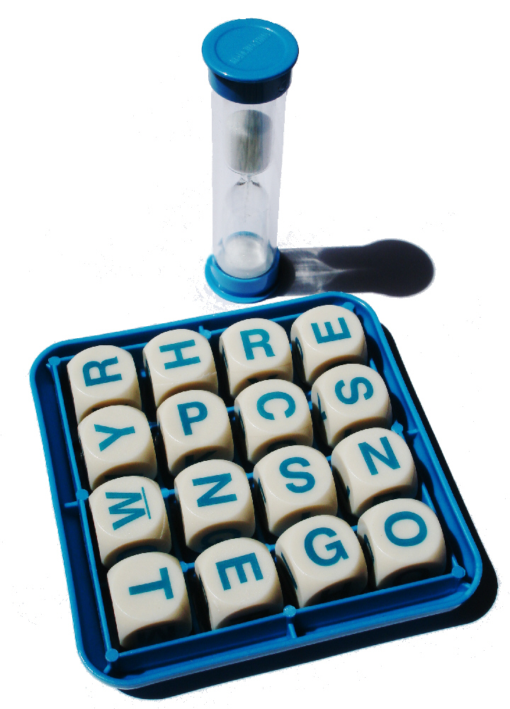

Thoughts on Designing Word-Building Games
This blog post is from 2018.
Two years ago, I designed and Kickstarted a word-building game called Movable Type, which went on to win the Irish Game Designers' Association (Imirt) award for Best Analogue Game 2016 and the British Library Lab Award for Best Commercial Product. Since then, I have also made and funded a second edition of the game. In doing so, I've come to a few realisations about what elements can make a stand-out word game in both the analogue and digital game spaces. This list is by no means authoritative or definitive, but more like a set of prompts to help in your own game-design process.
Before going any further, it's worth clarifying that I am going to be talking about word-building games, like Scrabble or Alphabear, that require you to use letter cards or tiles to create words. These are distinct from word guessing games, like Codenames or Heads Up, which are games based on inferential skills - I may look at those kind of games in another post.

Movable Type (later published as Letterpress) combines word-building with card-drafting, reducing downtime and creating strategic opportunities.
Word-Building is One Mechanism in a Richer Game
My mantra in game design is “find the fun” - and aside from the satisfaction derived from making a big word, word-building alone is rarely fun. Word-building is usually the least interesting mechanic in a word-building game - players have seen it done so many times before that it rarely excites them. While word-building can serve as an easy point of entry for less-experienced players, most good word-building games go beyond this mechanic, integrating it with something more interesting and strategic.
For the sake of illustration, here are how some particularly good word-building games integrate other mechanics in order to “find the fun”:
-
Scrabble (and it's many spin-offs like, Words with Friends), has a basic form of territory control, as players try to hit the bonus spaces on the board, and simultaneously try to deny their opponents the chance to get these same spaces. It also awards players for creating multiple words at once, usually by making a bunch of two-letter words. Having a good vocabulary is important, but being able to control the board is where the interesting strategies lie.
Controlling the Triple Word Score is the key to victory in Scrabble.
Paperback and Dexikon are word-building games which use elements of deck-building games. That means that players have to “buy” more valuable letters to use in the future by playing high value words in earlier rounds. It's a mechanic that mimics the feel of leveling up in an RPG.
-
Alphabear has the player uncovering the board as they play, trying to clear connected areas by playing specific tiles before they become locked.
Each tile has a timer and gives access to more territory. Using the right tile at the right time is important.
My own game, Movable Type, uses two kinds of card-drafting mechanics — a 7 Wonders style pick-and-pass card drafting at the start of each round and tableau drafting at the end of each round. Over time, players are collecting the letters that they need to play killer words later in the game. So there is long term and short term strategising, mixed in with word building.
In WYPS, players are trying to play words so that they can build paths of their own colour between the three edges of the board, making it feel a little like the brilliant abstract game, Tak. It also means there is no scoring in this game, which is refreshingly different.
-
Konexi implements a Jenga style dexterity element, so long words might score a lot, but may be harder to place onto the developing word tower.
 Bookworm Adventures implements combat into word-building. When players use certain letters, they attack their opponent's character, knocking that opponent's health down.
-
Letter Tycoon has players buying “stocks” and “patents” relating to certain letters, so they get payouts whenever certain letters are used. Rather than just trying to play the best words, players are trying to get rich off their investments.
If you patent a letter in Letter Tycoon, you'll earn money when other players use it.
Unspeakable Words has a push-your-luck element to it. The longer your word, the better your score, but then you must roll a 20-sided dice - if it shows a value lower than your score, you lose a life. If you lose all five lives, you're out!
The point is that there needs to be something beyond simple word-building for the fun to latch on to. The word-building is almost always front and centre, but these other elements and mechanics are the spice that brings your game to the next level. Without this spice, your game is only going to appeal to a very thin slice of the gaming population.
Downtime is a Killer
Word-building can take time and player turns in a word-building game have the potential to be very long. A long turn often means things get quite boring for the other players!
When playing Paperback, no matter how much I enjoyed the deck-building mechanic, the amount of downtime really soured me to the experience. I spent about 75% of the game just waiting for my turn.
If simultaneous play is possible, it should be embraced. Otherwise, consider the use of a timer, increasing access to more letters (so words are easier to build), or reducing the stakes for each turn (so playing the best word is not so important).
Shared or Unique Letters
Having a unique hand letters for each player introduces an element of chance, which can be very painful in a word game - drawing a hand of vowels may well leave the player with no effective moves. Conversely, having a shared pool of letters can create more interactivity and allow player to one-up each other - such as in Boggle or Wordsy. In these games, all players start on equal footing and there's no way luck can favour one of the other. A lot of games compromise by a having some common letters, to create a reasonably even playing field, in addition to a hand of letters for each player - examples would include Movable Type, Letter Tycoon, and Scrabble.
In Wordsy, everybody plays with the same letters, so there are no unfair draws.
Challenging a Word Should be Possible
This mainly applies to analogue games, where players have to police the legality of words played by one another. First of all, it should be established which kinds of words are allowed in the game - most word games disallow slang and proper nouns. Challenging words which break the rules must be interesting. There should be both a reward for correctly challenging a word (this reward could be in the form of penalising the other player) and a penalty for incorrectly challenging one. If a player can play fake words with impunity, then there isn't much of a game.
It boggles my mind how anyone can enjoy Boggle!
Letter Distribution Matters
In the first edition of Movable Type there are too few vowels, which leads to a lot of tactical play - it's possible to deny your opponents the letters that they need and it's important to bank vowels early. This was on purpose, but some players balked at the idea. For the second edition, there is a optional deck of vowels to ensure that each round has vowels among the shared letters. This small change leads to big changes in the tone of the game.
A word game may also needs to address doubled consonants and common letter pairings like “Qu”. Movable Type only gives a limited number of letter cards to each player, so they are allowed to double any card (they could play “Raccoon” with only an R, A, C, O, and N). Players can also use the Q card as either a Q or a Qu. Initially, the design only allowed players to double some specific letters, like the Z, but while I was finding the fun, it became apparent that doubling any letter was a better solution. It gives players more options and leads to fun and tricky plays.
Finally, the quantities of each letter and the score assigned to each letter (if any) affects what other languages the game can be played in. Other languages will have letters that are more prominent and easier to use. Even if a language uses the Roman script, they may have fewer letters - Tagalog, for example, does not use the letter F, V, C, J, Z, or X. Some word games are playable in multiple languages, provided the players remove specific letters before play - both to remove unused letters and even out the distribution. You will most likely find that you need a unique letter distribution for each language you choose to publish your game in.